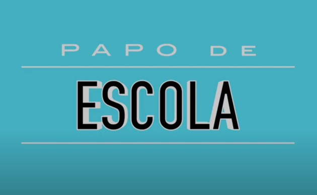
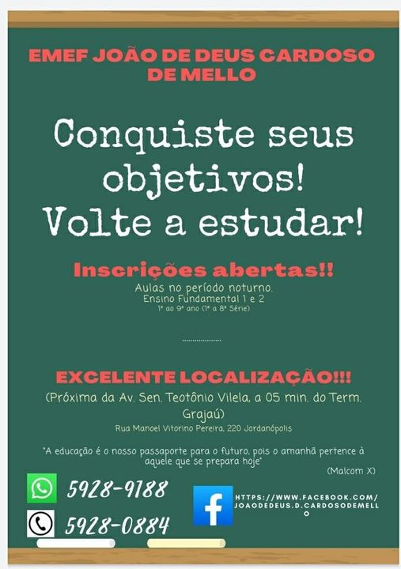

11/08/2020
Papo Escola
🎧 Podcast - nº 01
Projeto piloto inspirado a partir da oficina de redação coordenado pelo Profº Jesus.
Nova série de Podcasts da Imprensa Jovem "Joãozinho de Mello TV".
Convidados: Yuki Miura (aluno do 9º C) e a Profa. Viviane Nascimento.
Não percam!👂📻
Disponível também nos canais de streaming abaixo:


07/11/2020
VOLTE A ESTUDAR
EJA 2021
Faça sua inscrição aqui!
04/11/2020
BATE-PAPO VIRTUAL
Atenção alunos! 🚨🚨🚨
Se você é do Ensino Fundamental II ou EJA, participe de nosso bate- papo digital! Abordaremos um dos temas mais falados da atualidade.
👀 Ficou curioso?
Então vem teclar com a gente! 😉
Será na próxima terça-feira, 10/11 às 14h via Google Meet:
https://meet.google.com/sqv-gjoh-pzb
*Em breve estenderemos o convite ao Fund. I.
03/11/2020
REMATRÍCULA 2021
⚠️INFORME IMPORTANTE❗
Srs. Responsáveis e Estudantes.
Comunicamos que na Rede Municipal de Ensino, neste momento de pandemia, as rematrículas para 2021 serão efetivadas automaticamente pela nossa equipe da secretaria.
Não será necessário que os responsáveis compareçam à escola para fazerem a rematrícula nesse momento.
Se houver nova orientação, informaremos por meio deste canal de comunicação.
Atenciosamente.
Equipe gestora.
EMEF JOÃO DE DEUS CARDOSO DE MELLO
09/10/2020
GRÊMIO ESTUDANTIL
Siga o Grêmio nas redes sociais